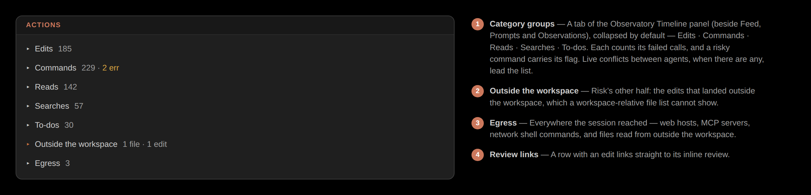

Actions view
The Actions view shows the tool-call timeline and raises the conflicts that need attention first.
The Actions view is the typed timeline of everything the session did — every action, in order, grouped by kind. It's where you go to see the shape of a session's work, not only its file changes.
The timeline
The Actions view groups tool calls by kind, collapses low-signal categories, and always surfaces errors. It opens with any live conflicts — because those need attention before the agents collide further — and closes with the two audits: risk and egress.

Edits link back to review
Edit rows in the timeline link straight to their review — so you can move from "what did it do here" to "do I keep this" without leaving the view. Every other action is reconstructed from the transcript; only edits were also captured on disk.